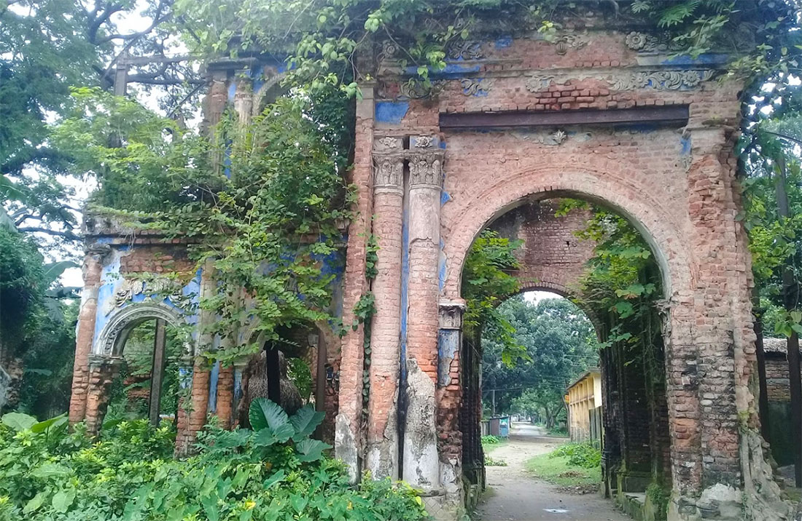
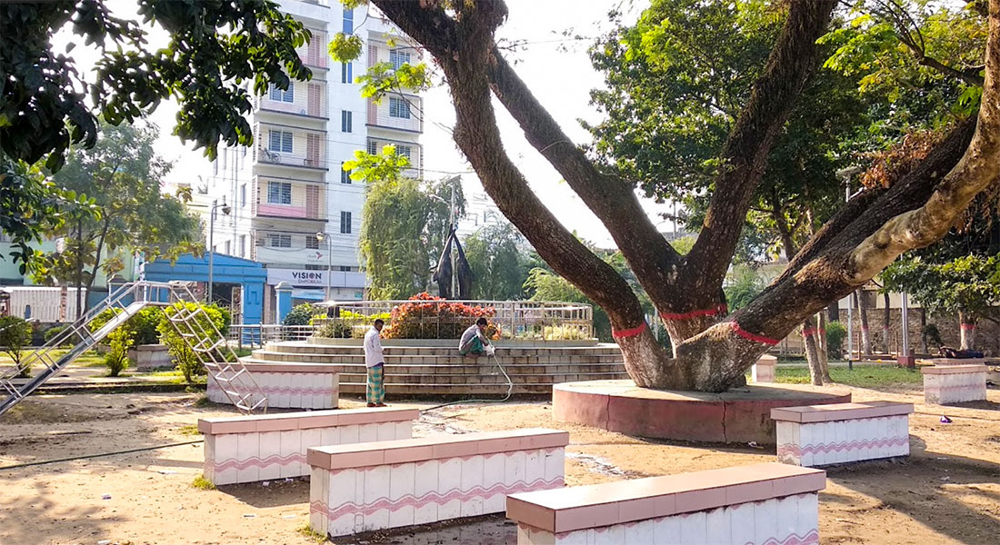
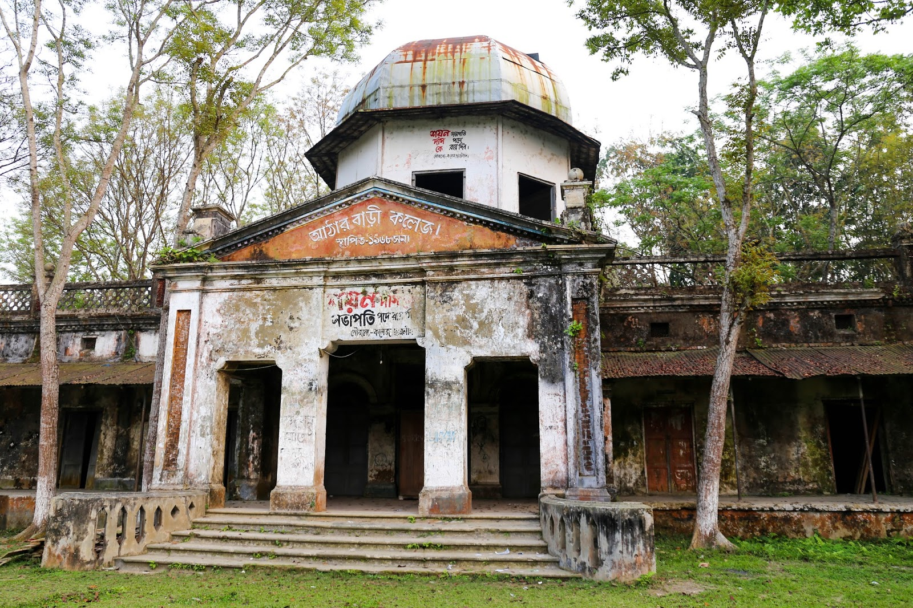
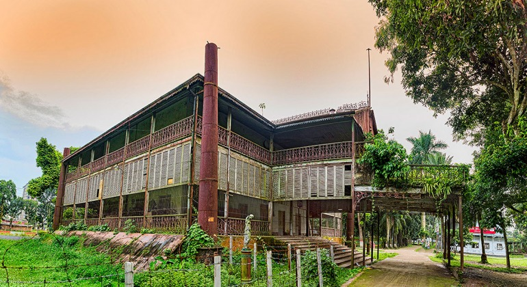

1. Shoshi Lodge/শশী লজ
Shoshi Lodge is a palace located at Mymensingh district headquarters. In the 19th century, Maharaj Suryakant Acharya Chowdhury, the zamindar of Muktagasa, built the spectacular palace. Maharaj Suryakant named the palace Shoshi Lodge after his adopted son Shashikant Acharya Chowdhury. It’s locally known as Mymensingh Rajbari. When the 1897 earthquake damaged the building, Shashikant Acharya Chowdhury rebuilt it. There are 16 domes at the main gate of the Shoshi Lodge building built on 9 acres of land. Shoshi Lodge has a magnificent garden in front of the main building. In the middle of the garden is a marble statue of The Greek Goddess Venus with a white stone fountain. Behind the main building of 18 huge rooms are two-story bathrooms, ponds, and marble ghats. When the Women Teachers Training College was established at Shoshi Lodge in 1952, the main building of the house was done as the principal’s office.

2. Muktagasa Zamindar House/মুক্তাগাছা জমিদার বাড়ি
Muktagasa Zamindar House is a traditional ancient structure of Muktaghasa Upazila in the Mymensingh district. This Muktaghasa palace is located 17 km from Mymensingh. The zamindar of the then Muktagasa got the title of king first and then maharaja from the British. So this residence of the zamindaris called Muktagasa Rajbari. 16 parts of Muktagasa zamindari were ruled by 16 zamindars. The entrance of the Muktaghasa Zamindar house has a giant lion door. Inside the palace are the zamindar’s mother’s house, temple, darbar hall, kacharighar, guest house, ark room, and other buildings. The royal house also had a rare library of about 10,000 books, which was threatened at different times. At present, some of it is preserved in Muktagasha Bangla Academy. The Muktagasa Palace, built on about 100 acres of land, bears witness to the unique artifacts of ancient architecture. The palace is currently under the supervision of the Bangladesh archaeology department.

3. Ramgopalpur Zamindar House/রামগোপালপুর জমিদার বাড়ি
Shourindra Kishore Roy Chowdhury, son of Ramgopalpur zamindar Yogendra Kishore Roy Chowdhury, was born in 1293 Bengali. Shourindra Kishore Roy Chowdhury made a name for himself by writing the book ‘Barendravahman Zamindar’ on the history of zamindars in Gauripur and adjoining areas. It is believed that Ramgopalpur zamindar Ghar (Ramgopalpur Zamindar Bari) was constructed in the 1850s. However, specific information about the founder of the Ramgopalpur zamindar dynasty was not found. Gauripur’s estate was about 150 years old, but most of the zamindars of Gauripur left the country during the partition of the country in 1947. Consequently, the tradition of Ramgopalpur is also on the verge of extinction as time marches on. Once upon a time, the zoo, villa, Sagardighi, carved pond ghat, and 3-story arch of Ramgopalpur zamindar house are now only memories. There is nothing left but two entrances, ruined walls, and temples of zamindar houses. Various pujas are still held in the temple of zamindar ghar.
4.Bipin Park/বিপিন পার্ক
Bipin Park is a traditional 200-year-old entertainment center located on the banks of the Brahmaputra river in the heart of Mymensingh district city. The park has been renovated on Congress Jubilee Road as a theme park with a limited range by renovating the breakdown of tradition. Bipin Park has been rebuilt with spectacular waterfalls, various structures, flower gardens, foot-to-foot roads, boundary walls, and seating benches.
5.Atharbari Zamindar Bari/আঠারবাড়ী জমিদার বাড়ী
The spectacular Atharbari Zamindar House (Atharabari Zamidar Bari) is located nearly two and a half hundred years old in Atharbari village of Ishwarganj Upazila, one of the wealthiest townships of Mymensingh district. The distance of zamindar’s house from Sadar in Ishwarganj Upazila is about 14 km. In the past, Atharbari village was known as Shivganj/Govind Bazar. Zamindar Dip Roy Choudhary purchased the estate in his son’s name and changed the name of the area to Roy Bazar. Roy Babu built a palace, pond, and trench in a part of the estate and brought eighteen Hindu families from Jessore to look after the work of the royal family, and built a house for them to live in. Since then, this place has become known as Atharbari. On February 19, 1926, poet Guru Rabindranath Tagore visited the Atharbari Palace at the invitation of Pramod Chandra Roy Chowdhury, the then zamindar of Atharbari. At that time, lunch, baul, zari-sari songs were organized in honor of the poet guru. It is learned that Pramod Chandra Roy Chowdhury, zamindar of Atharbari, was a student of Shantiniketan and his teacher was poet Guru Rabindranath Tagore himself. Apart from this, fiction writer Humayun Ahmed shot the film Chandrakatha released in 2003 at this zamindar house. In 1968, Atharbari degree college was established in the house of Atharbari Zamindar. As soon as he entered through the college’s main gate, he noticed the huge playground and the inner palace of the zamindar’s house. A little further from the inner palace is the darbar hall and kasari house inside the college. The traditional Ranipukur is located near kasari ghar bhawan.
6. Botanical Garden, Mymensingh/বোটানিক্যাল গার্ডেন
Bangladesh Agricultural University in Mymensingh district has a reputation as a quiet place covered with green. Botanical Garden was established in 1963 with rare species of plants collecting around 25 acres of the university campus on the banks of the old Brahmaputra river. The first botanical garden in Bangladesh, recognized by the international organization Botanic Gardens Conservation International (BGCI), has about 600 different plants, including 1,000 large, 1278 medium, and 4467 small trees. These include Gutgutia, African Tulip, Kaizelia, Swarnashoka, Kumbi, Nageshwarchapa, Budhanarikel, Patenjaba, Pahari Kash, Kaika, Sinduri, Bixa Chandul, Epikak, etc. Kalahuja, Passion Fruit, Deris, Kalomegh, Misridana, Nilkanta, Shatmuli, Swarpagandha, Talmuli, Honey Sakal, Bankala, Yellow Kanchan, Shambhukas, AnantLata, Khami, Kulanjan, Kanthakash, Sultanchapa, Kaika, Kansunalu, Letkantha, Patipata, Nakshivomika, Nadajam, Tithijam, Ajuli, Shal, Kharajura, Arusa, Panikalami, Khuskher, Elena, Chagalladi, Motha, Avukado, Durian, Kokua, Satkara, Barmala, Meilam, Swarna Ashoka, Raj Ashoka, Branfelsia, Cactus, Lalchita, Nilchita, Galpepper, Masukda, Ganiari, Grillirichida, Fern Haringanga, Atmara, Beria, Behelatad, Fern Kadai, Gardenia, Bambus, Rondelitia, Tabebua, Dumbia, Banjari, Jayatri, Jayapal, Nagnath, Jacharanda, Wild Dates, Skafelara, Ravenia, Jakutivasa, Verigate Monder, Persimon, Harguja Kanta etc. One of the crop botany department of the Agricultural University teachers served as garden curator for two years. This Botanical Garden is used for students of various faculties at graduate, master’s, and Ph.D. levels. Students from other nearby districts and educational institutions also come to botanical gardens to learn about the plant world. Apart from the huge flora, there are portraits of various animals and about half a hundred rest benches for visitors. Students of Bangladesh Agricultural University, i.e., Bakribi, can enter botanical gardens free of cost. Ordinary visitors have to collect entry coupons to enter. Botanical Gardens are open to all visitors from Sunday to Thursday from 2 pm to 5 pm every week. And Fridays and Saturdays of the week are open from 9 am to 5 pm.

7.Shilpaacharya Zainul Abedin Sangrahashala
hilpaacharya Zainul Abedin Museum (Shilpacharya Zainul Abedin Sangrahashala) has been set up on the banks of the Brahmaputra River in the Saheb Quarter area of Mymensingh district, the birthplace of Shilpaacharya Zainul Abedin. On April 15, 1975, Shilpaacharya Zainul Abedin, with the help of the district administration, inaugurated the museum through the then Vice President Syed Nazrul Islam with 70 of his paintings. Later in 1987, the Shilpaacharya Zainul Abedin Museum became a two-story tower. The Shilpaacharya Zainul Abedin Museum area has been constructed by constructing a dam around the Brahmaputra River. Every morning and evening, numerous visitors visit the Shilpaacharya Zainul Abidin Museum and the park. At present, The Shilpaacharya Zainul Abidin Museum is being run by the Bangladesh National Museum.

8.Moyna Dwip (Moyna Island)/ময়নাদ্বীপ
The delta that woke up in the Brahmaputra river near Bangladesh Agricultural University, just 6 km from Mymensingh city, is known as Moyna Char or Moyna Island (Moyna Dwip). On the one hand, it is a beautiful, clean-watered area, and on the other side, a large commercially grown lemon garden sits on the edge of Moyna Island. It is heard that Moyna Mia, an activist of the anti-British movement, lived here. He used to spend time playing flutes while sitting under the tree in leisure. Many people used to come to meet Moyna Mia when they heard the melodious tune of the flute. The Moyna Mia taught them the wisdom of driving off the British, and thus that area became known as Moyna Char or Moyna Island. According to some, it is named after the many peacocks living there in the past. Moyna, surrounded by noisy noise, is a sight to behold, with people living along the river, lined boats, thousands of wild duck flocks, and an abundance of birds of prey such as Pankauri and chills. The beautiful sunset scene on the way back fascinates the visitors. So the travel enthusiasts rushed to Moyna Island to spend time in silence away from the city. The site is also currently gaining popularity as a picnic spot.

9. Alexander Castle/আরেকজান্ডার ক্যাসেল
Alexander Castle is an ancient traditional structure located in the heart of Mymensingh city. The palace was built in 1879 by the then Maharaja of Muktagasa Suryakant Acharya to protect the property of district magistrate Alexander. The magnificent palace was built with a beautiful combination of wood and iron from far-away China. It is known to locals as an “iron hut” due to excessive iron use in building palaces. Full of beautiful artwork and aesthetics, the hut has two marble statues in front of the main gate and a few women’s sculptures all around. Arrangements were made to keep the cool inside the palace using Avro and Chumki on the roof of the two-story building. Behind the palace are huge ponds, flower gardens, and an artificial lake. Alexander Castle is blessed with the footsteps of celebrities like Lord Curzon, Deshbandhu Chitta Ranjan Das, Nawab Sir Salimullah, and Kamal Pasha. In 1926, world poet Rabindranath Tagore spent a few days here during his visit to Mymensingh. The hut is currently being used as a library of Mymensingh Teachers Training College. When came out of the gate behind Alexander castle, the Brahmaputra River, circuit house, and Zainul Abedin Park can be seen.
10.Meghmati Village Resort/মেঘমাটি ভিলেজ রিসোর্ট
Meghmati Village Resort has been set up at Valuka in Mymensingh district to spend their retirement in a rural environment and green. It takes only two and a half hours to reach Meghmati Village Resort from the capital Dhaka. The Meghmati Resort has a magnificent swimming pool attached to a two-story villa with modern amenities. And around the resort are a variety of fruit trees. Meghmati Village Resort has a system of sports both indoor and outdoor. The authorities provide the equipment to play to get into sports on the field.